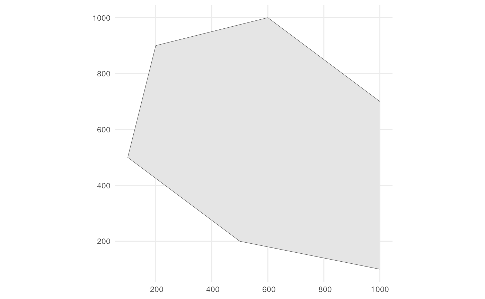
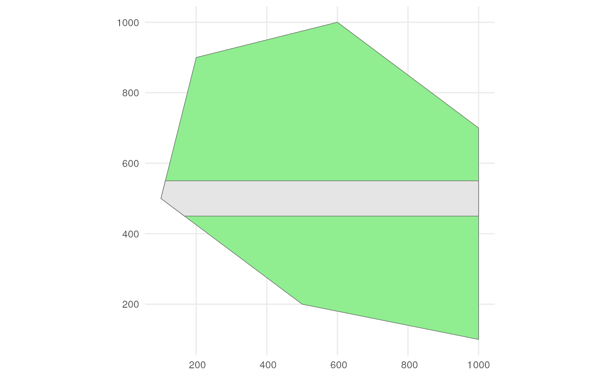
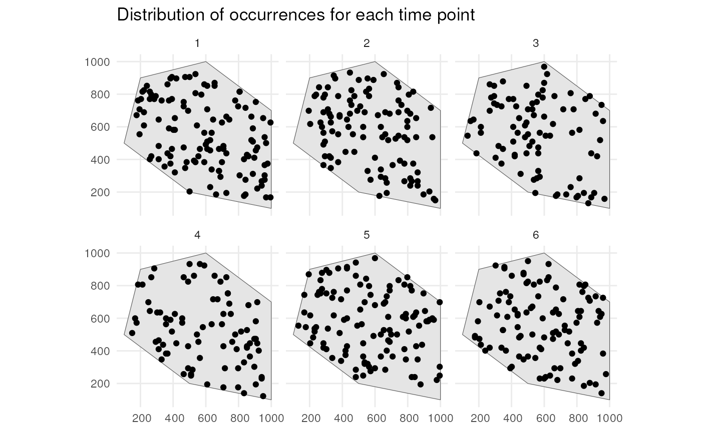
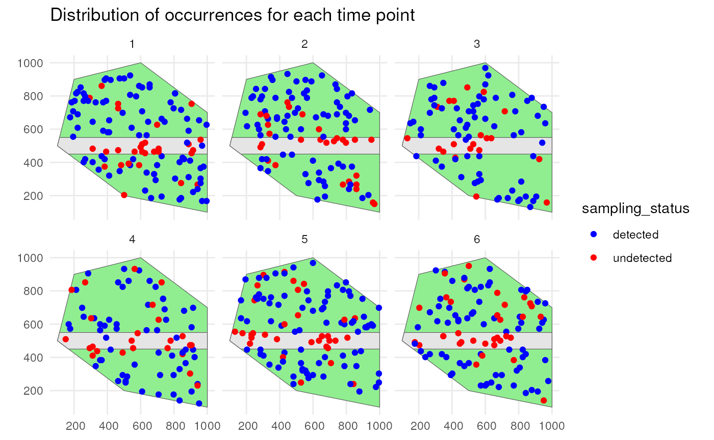
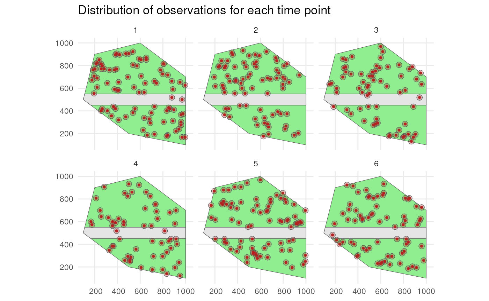
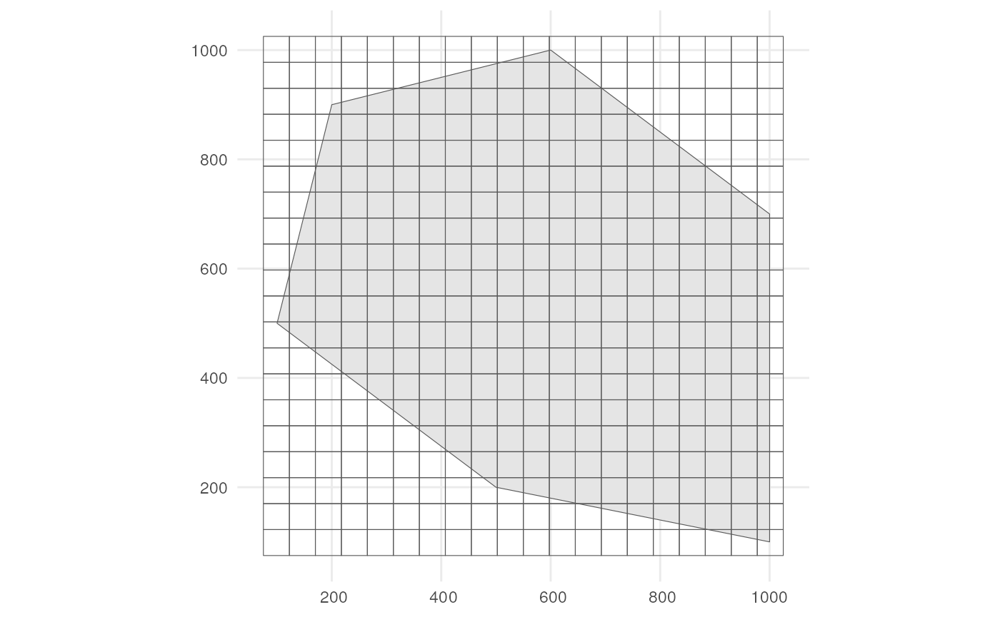
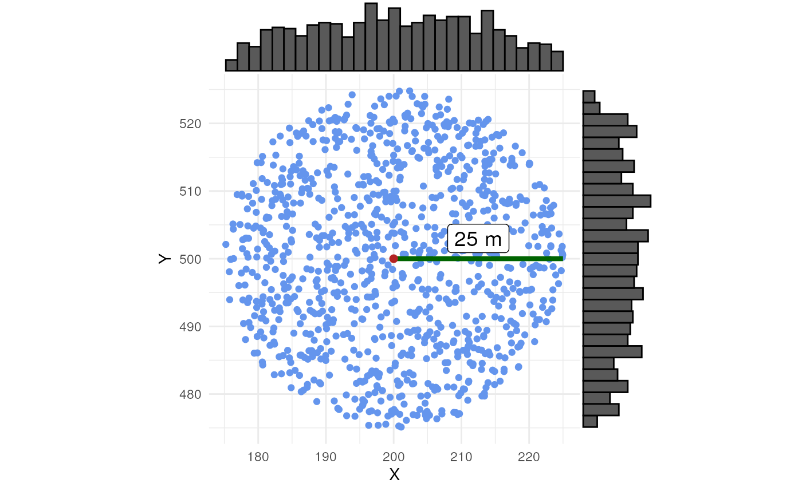
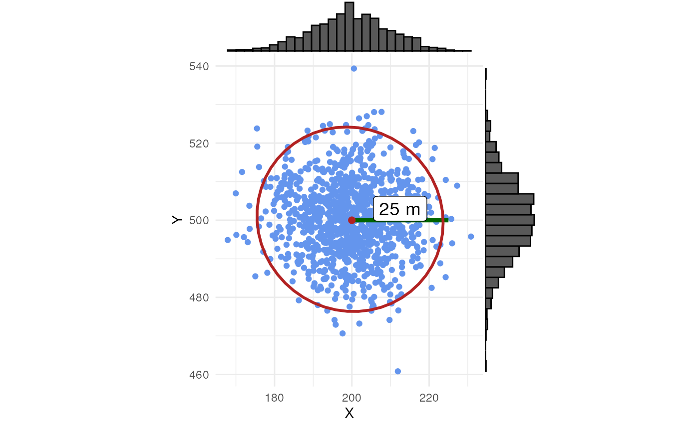
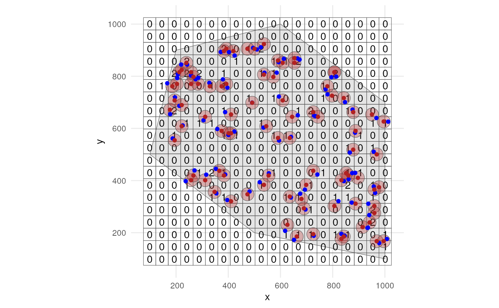
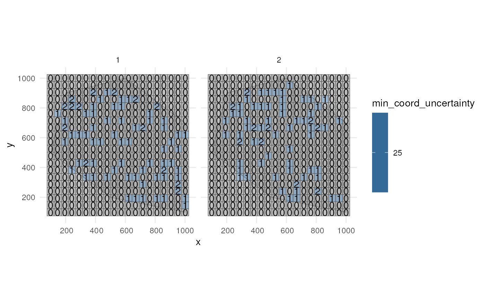

3. Specifying the grid designation process
Source:vignettes/grid-designation-process.Rmd
grid-designation-process.RmdThe workflow for simulating a biodiversity data cube used in gcube can be divided in three steps or processes:
- Occurrence process
- Detection process
- Grid designation process
This vignette documents the third part of the gcube simulation workflow, viz. the grid designation process.
# Load packages
library(gcube)
library(sf) # work with spatial objects
library(dplyr) # data wrangling
library(ggplot2) # data visualisation
library(ggExtra) # enhance data visualisationInput
The functions are set up such that a single polygon as input is enough to go through this workflow using default arguments. The user can change these arguments to allow for more flexibility. As input, we create a polygon in which we simulate occurrences.
polygon <- st_polygon(list(cbind(c(500, 1000, 1000, 600, 200, 100, 500),
c(200, 100, 700, 1000, 900, 500, 200))))The polygon looks like this.
ggplot() +
geom_sf(data = polygon) +
theme_minimal()
Also consider a road across our polygon.
# Define the road width
road_width <- 50
# Create road points
road_points <- rbind(c(100, 500), c(1000, 500))
# Create road-like polygon within the given polygon
road_polygon <- st_linestring(road_points) %>%
st_buffer(road_width) %>%
st_intersection(polygon) %>%
st_polygon() %>%
st_sfc() %>%
st_as_sf() %>%
rename(geometry = x)The result looks like this.
ggplot() +
geom_sf(data = polygon, fill = "lightgreen") +
geom_sf(data = road_polygon) +
theme_minimal()
We can for example sample randomly within the polygon over 6 time
points were we use a random walk over time with an initial average
number of occurrences equal to 100 (see
vignette("occurrence-process")).
occurrences_df <- simulate_occurrences(
plgn = polygon,
initial_average_abundance = 100,
n_time_points = 6,
temporal_function = simulate_random_walk,
sd_step = 1,
spatial_autocorr = "random",
seed = 123)
#> [using unconditional Gaussian simulation]This is the spatial distribution of the occurrences for each time point
ggplot() +
geom_sf(data = polygon) +
geom_sf(data = occurrences_df) +
facet_wrap(~time_point, nrow = 2) +
ggtitle("Distribution of occurrences for each time point") +
theme_minimal()
We detect occurrences using a 0.9 detection probability and a bias of
0.1 to detect occurrences on the road (see
vignette("detection-process")).
detections_df_raw <- sample_observations(
occurrences_df,
detection_probability = 0.9,
sampling_bias = "polygon",
bias_area = road_polygon,
bias_strength = 0.1,
seed = 123)This is the spatial distribution of the occurrences for each time point
ggplot() +
geom_sf(data = polygon, fill = "lightgreen") +
geom_sf(data = road_polygon) +
geom_sf(data = detections_df_raw,
aes(colour = sampling_status)) +
scale_colour_manual(values = c("blue", "red")) +
facet_wrap(~time_point, nrow = 2) +
labs(title = "Distribution of occurrences for each time point") +
theme_minimal()
We only keep the detected occurrences and add 25 meters of
uncertainty to each observation (see
vignette("detection-process")).
# Keep detected occurrences
detections_df <- detections_df_raw %>%
dplyr::filter(sampling_status == "detected")
# Add 25 m coordinate uncertainty
observations_df <- add_coordinate_uncertainty(
observations = detections_df,
coords_uncertainty_meters = 25)The final observations with uncertainty circles look like this.
# Create sf object with uncertainty circles
buffered_observations <- st_buffer(
observations_df,
observations_df$coordinateUncertaintyInMeters)
# Visualise
ggplot() +
geom_sf(data = polygon, fill = "lightgreen") +
geom_sf(data = road_polygon) +
geom_sf(data = buffered_observations,
fill = alpha("firebrick", 0.3)) +
geom_sf(data = observations_df, colour = "firebrick", size = 0.8) +
facet_wrap(~time_point, nrow = 2) +
labs(title = "Distribution of observations for each time point") +
theme_minimal()
Grid designation
Now we can make a data cube from our observations while taking into
account the uncertainty. We can create the grid using the
grid_designation() function.
?grid_designationWe also need a grid. Each observation will be designated to a grid cell.
cube_grid <- st_make_grid(
st_buffer(polygon, 25),
n = c(20, 20),
square = TRUE) %>%
st_sf()The grid looks like this.
ggplot() +
geom_sf(data = polygon) +
geom_sf(data = cube_grid, alpha = 0) +
theme_minimal()
How does grid designation take coordinate uncertainty into account?
The default is "uniform" randomisation where a random point
within the uncertainty circle is taken as the location of the
observation. This point is then designated to the overlapping grid cell.
Another option is "normal" where a point is sampled from a
bivariate Normal distribution with means equal to the observation point
and the variance equal to
(-coordinateUncertaintyInMeters^2) / (2 * log(1 - p_norm))
such that p_norm % of all possible samples from this Normal
distribution fall within the uncertainty circle. This can be visualised
by using these helper functions.
?sample_from_uniform_circle
?sample_from_binormal_circleLets create a single random point with 25 meter coordinate uncertainty. We sample 1000 times using uniform and normal randomisation to look at the difference between the methods.
# Create point and add coordinate uncertainty
point_df <- tibble(
x = 200,
y = 500,
time_point = 1,
coordinateUncertaintyInMeters = 25) %>%
st_as_sf(coords = c("x", "y"))
# Number of simulations
n_sim <- 1000We take 1000 samples with uniform randomisation.
list_samples_uniform <- vector("list", length = n_sim)
for (i in seq_len(n_sim)) {
sampled_point_uniform <- sample_from_uniform_circle(point_df)
sampled_point_uniform$sim <- i
list_samples_uniform[[i]] <- sampled_point_uniform
}
samples_uniform_df <- do.call(rbind.data.frame, list_samples_uniform)We take 1000 samples with normal randomisation
list_samples_normal <- vector("list", length = n_sim)
for (i in seq_len(n_sim)) {
sampled_point_normal <- sample_from_binormal_circle(point_df, p_norm = 0.95)
sampled_point_normal$sim <- i
list_samples_normal[[i]] <- sampled_point_normal
}
samples_normal_df <- do.call(rbind.data.frame, list_samples_normal)
# Get coordinates
coordinates_uniform_df <- data.frame(st_coordinates(samples_uniform_df))
coordinates_normal_df <- data.frame(st_coordinates(samples_normal_df))
coordinates_point_df <- data.frame(st_coordinates(point_df))
# Create figures for both randomisations
scatter_uniform <- ggplot() +
geom_point(data = coordinates_uniform_df,
aes(x = X, y = Y),
colour = "cornflowerblue") +
geom_segment(data = coordinates_point_df,
aes(x = X, xend = X + 25,
y = Y, yend = Y),
linewidth = 1.5, colour = "darkgreen") +
geom_label(aes(y = 503, x = 212.5, label = "25 m"), colour = "black",
size = 5) +
geom_point(data = coordinates_point_df,
aes(x = X, y = Y),
color = "firebrick", size = 2) +
coord_fixed() +
theme_minimal()
scatter_normal <- ggplot() +
geom_point(data = coordinates_normal_df,
aes(x = X, y = Y),
colour = "cornflowerblue") +
geom_segment(data = coordinates_point_df,
aes(x = X, xend = X + 25,
y = Y, yend = Y),
linewidth = 1.5, colour = "darkgreen") +
geom_label(aes(y = 503, x = 212.5, label = "25 m"), colour = "black",
size = 5) +
stat_ellipse(data = coordinates_normal_df, aes(x = X, y = Y),
level = 0.975, linewidth = 1, color = "firebrick") +
geom_point(data = coordinates_point_df,
aes(x = X, y = Y),
color = "firebrick", size = 2) +
coord_fixed() +
theme_minimal()In the case of uniform randomisation, we see samples everywhere and evenly spread within the uncertainty circle.
ggExtra::ggMarginal(scatter_uniform, type = "histogram")
In the case of normal randomisation, we see some samples outside the
uncertainty circle. This should be 0.05 (=1 - p_norm) %. We
also see more samples closer to the central point.
ggExtra::ggMarginal(scatter_normal, type = "histogram")
If no coordinate uncertainty is provided, the original observation point is used for grid designation.
Example
Now we know how to use the randomisation in
grid_designation(). By default we use uniform
randomisation. We create an occurrence cube for time point 1.
occurrence_cube_df <- grid_designation(
observations_df,
cube_grid,
seed = 123)For each grid cell (column id) at each time point
(column time_point), we get the number of observations
(column n, sampled within uncertainty circle) and the
minimal coordinate uncertainty (column
min_coord_uncertainty). The latter is 25 for each grid cell
since each observation had the same coordinate uncertainty.
head(occurrence_cube_df %>% st_drop_geometry())
#> # A tibble: 6 × 4
#> time_point id n min_coord_uncertainty
#> <int> <chr> <int> <dbl>
#> 1 1 106 1 25
#> 2 1 107 1 25
#> 3 1 109 1 25
#> 4 1 112 1 25
#> 5 1 113 1 25
#> 6 1 116 1 25Get sampled points within uncertainty circle by setting
aggregate = FALSE.
sampled_points <- grid_designation(
observations_df,
cube_grid,
seed = 123,
aggregate = FALSE)Lets visualise were the samples were taken for time point 1.
ggplot() +
geom_sf(data = polygon) +
geom_sf(data = occurrence_cube_df %>% dplyr::filter(time_point == 1),
alpha = 0) +
geom_sf_text(data = occurrence_cube_df %>% dplyr::filter(time_point == 1),
aes(label = n)) +
geom_sf(data = buffered_observations %>% dplyr::filter(time_point == 1),
fill = alpha("firebrick", 0.3)) +
geom_sf(data = sampled_points %>% dplyr::filter(time_point == 1),
colour = "blue") +
geom_sf(data = observations_df %>% dplyr::filter(time_point == 1),
colour = "firebrick") +
theme_minimal()
Visualise minimal coordinate uncertainty for time points 1 and 2.
ggplot() +
geom_sf(data = polygon) +
geom_sf(data = occurrence_cube_df %>% dplyr::filter(time_point %in% 1:2),
aes(fill = min_coord_uncertainty), alpha = 0.5) +
geom_sf_text(data = occurrence_cube_df %>% dplyr::filter(time_point %in% 1:2),
aes(label = n)) +
facet_wrap(~time_point) +
theme_minimal()